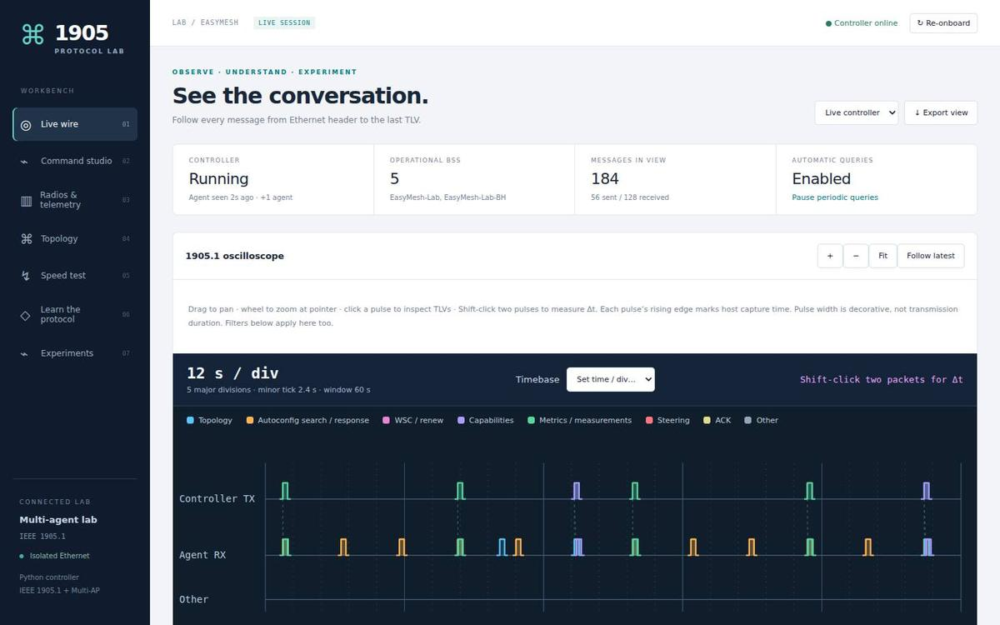

boardfarmdevs · EasyMesh labs · the labs as built · 7 October 2026
The labs, running
Three RDK labs in the target configuration, one per host, and the physical lab: what
runs inside each, where the optimizer runs, and the address to open. The addresses are on
the lab network; from anywhere else, a lab is reached through
remote access.
rev140
Builds the images (Yocto). Runs rdk-1004, with two physical OpenSync pods (Raspberry Pis) on its controller over Ethernet. A prplMesh lab is built here when needed, one lab at a time.
rev120
Runs rdk-emosa-1005, published through remote access, and the physical lab (stopped), whose USB Ethernet adapter and Wi-Fi clients are plugged in here. RDK only: no prplMesh.
rev150
Runs rdk-emosa-1006. The room browser for the other two hosts, container builds, fuzzing.
the gateway bpibroadband: RDK's controller, its own agent, em_cli, and EMOSA from the image (the fleet, one C agent per pod, the GTP that ends the pods' GRE); Wi-Fi extenders bpiap, bpiap-001…003; the wired extender bpiap-004; pod-1, pod-2: unchanged OpenSync 6.6.1 pods; 100 wlan-client-*; boardfarm's WAN (docker)
Pods
onboarded by RDK's controller as EasyMesh agents, on a Wi-Fi backhaul; the controller can move a pod's backhaul
In the VM
hwsim radios, wmediumd and Console NG from gen/medium; the room service (easymesh-optimizer's, started by gen/rooms/room-service)
Optimizer
runs in the room service, from gen/optimizer (easymesh-optimizer); it acts through em_cli and steers clients on the pods too
rev120 · easymesh-lab deploy/lxd-vm/build_vm.py + the USB handover
easymesh-lab · physical protocol lab

Inside
the Python controller and panel in the VM; a USB Ethernet adapter to a TP-Link RE653BE (the primary agent); a second extender on a Wi-Fi backhaul; managed USB Wi-Fi 7 clients; phones, tablets, laptops
Optimizer
its own, small: optimizer.py
Open
stopped; when started: panel http://192.168.2.120:8765/ · speed test :8766 (from rev120's own address)
Real hardware
in every lab VM · easymesh-medium observer/
Console NG · the medium, live
Shows
every radio and directed path of the medium, frames, drops, SNR and airtime, read-only
Open
its port in each lab: 29611 (rdk-1004), 22011 (rdk-emosa-1005), 28101 (rdk-emosa-1006)
Core 1 at work
Inside an optimizer lab
a host (rev140, rev120, rev150)
one LXD VM: its own kernel, radios and medium
hwsim radiosabout 105–115, one per client and several per agent easymesh-medium hwsim/
wmediumddelivers each frame by the room's RF easymesh-medium wmediumd/
Console NGport 8890 easymesh-medium observer/
Room service + optimizerport 8891, the live room gen/optimizer (room_service) · gen/rooms
boardfarm WANdocker: WAN and DHCP
nested LXD containers, each with its own radios
Gatewaycontroller, its agent, the controller's web UI, EMOSA
Extenders4 on Wi-Fi backhaul, 1 wired
100 clientswpa_supplicant, one radio each
OpenSync podstwo, onboarded through the gateway's EMOSA